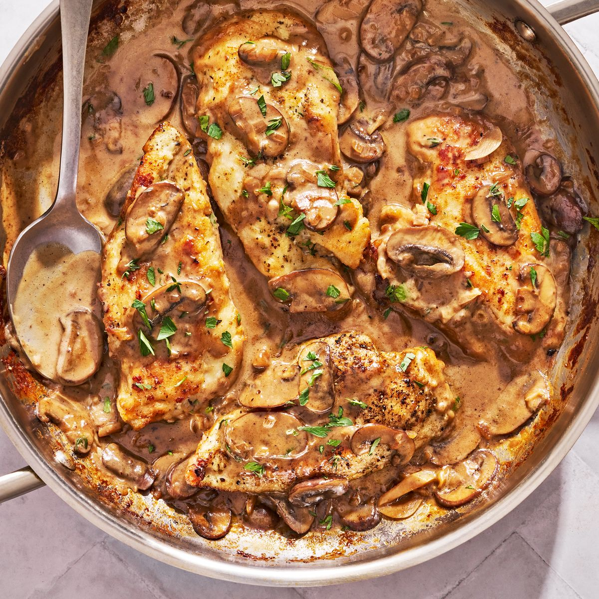

Chicken Marsala

Description
Chicken Marsala is a classic Italian-American dish that's crowd-pleasing, quick, and irresistible. The slightly sweet and savory sauce made of mushrooms, aromatics, and Marsala wine is straight-up drinkable, thanks to the not-so-traditional addition of heavy cream. It's the perfect weeknight dinner, and we don't even feel guilty making it three nights in a row. It's a real plus that this dish comes together in just 35 minutes.
Ingredients
- 1 1/2 lb. boneless, skinless chicken breasts (2 to 3)
- 1 tsp. freshly ground black pepper
- 1 tsp. Italian seasoning
- 2 tsp. Kosher salt, divided
- 1/2 c. all-purpose flour
- 4 tbsp. extra-virgin olive oil, divided
- 3 tbsp. unsalted butter, divided
- 8 oz. cremini mushrooms, thinly sliced
- 1 shallot, finely chopped
- 3 cloves garlic, sliced
- 1 tbsp. chopped fresh thyme
- 3/4 c. Marsala wine
- 1 1/4 c. low-sodium chicken broth
- 3/4 c. heavy cream
- 1 tbsp. chopped fresh parsley
Steps
- Pat chicken dry and remove tenderloin from breasts. Butterfly each breast, then separate butterflied halves to create 4-6 thin pieces; season both sides of chicken with pepper, Italian seasoning, and 1 1/2 teaspoons salt.
- Pour flour into a shallow dish. Dredge each piece of chicken in flour, coating both sides, and tap off any excess.
- In a large skillet over medium-high heat, heat 1 tablespoon oil, then melt 1 tablespoon butter. Add half of chicken and cook, turning occasionally, until golden brown, 2 to 3 minutes per side. Transfer to a plate. Repeat with 1 tablespoon oil and remaining chicken.
- In same skillet over medium heat, heat 1 tablespoon oil. Add mushrooms and cook, stirring occasionally, until softened, about 5 minutes. Add shallot and remaining 1 tablespoon oil and 1/2 teaspoon salt and cook, stirring frequently, until translucent, about 2 minutes. Add garlic and thyme and cook, stirring, until fragrant, about 1 minute. Add wine and cook, stirring occasionally and scraping browned bits from bottom of pan, until reduced by half, 4 to 5 minutes. Add broth and cream and bring to a simmer. Cook, stirring occasionally, until sauce starts to thicken, about 15 minutes.
- Stir in remaining 2 tablespoon butter until melted. Return chicken to skillet spoon sauce over chicken until heated through, 2 to 3 minutes. Top with parsley.
Source: Delish